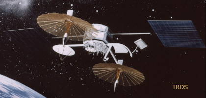

U.S. Space Shuttle (Space Transport System)
payloads - satellite deployment

U.S. Space Shuttle (Space Transport System)
payloads - satellite deployment
The shuttles were used to launch over thirty long duration satellites into orbit. Short duration satellites for research purposes were also deployed on various missions. These are covered in other pages.
After being deployed into Low Earth Orbit (LEO) 🔗 by the shuttle, long duration satellites used their own engines to reach their operational orbit. The shuttles were also used to repair failed satellites in orbit or return them to Earth.
Two types of long duration satellite payloads are summarised in this page:-
1. General Communication Satellites - Mainly used for the transmission of voice, video or data from one location on Earth to another.
2. Tracking and Data Relay Satellites - Used by U.S. government agencies for communications between platforms such as satellites, balloons, aircraft, the International Space Station, and remote bases.
A general communications satellite is an artificial satellite that relays and amplifies radio telecommunications signals via a transponder; it creates a communication channel between a source transmitter and a receiver at different locations on Earth. Communications satellites are used for television, telephone, radio, internet, and military applications.
The general communication satellites deployed by the Shuttle are shown in the table below and the following paragraphs.
(Ref: Wikipedia Payload Assist Module, Geosynchronous Orbit)
| Acronym | Name | STS No. | Year |
| SBS-3, 4 | U.S. Satellite Business Systems | 5, 41D | 1982, 1984 |
| Anik-C2, C3, D2, C1 | Canadian Telesat | 7, 5, 51A, 51D |
1983, 1982, 1984, 1985 |
| Palapa-B1, B2 | Indonesia's state owned PERUMTEL | 7, 41B | 1983, 1984 |
| INSAT-1B | Indian Space Research Organization | 8 | 1983 |
| Westar 6 | U.S. Western Union | 41B | 1984 |
| Syncom IV-2, 1, 3, 4, 5 | U.S. leased to government | 41B, 51A, 51D, 51I, 32 |
1984, 1984, 1985, 1985, 1990 |
| Telstar C3 | Canadian Telesat | 41D | 1984 |
| Morelos-A, B | Mexican national TV | 51G, 61B | 1985 |
| ARABSAT-1B | Arab Satellite Communications Organization | 51G | 1985 |
| Telstar 3D | U.S. domestic communications | 51G | 1985 |
| ASC-1 | American Satellite Company | 51I | 1985 |
| AUSSAT-1, 2 | Australian national communications system | 51I, 61B | 1985 |
| Satcom KU-2, KU-1 | U.S. RCA America | 61B, 61C | 1985, 1986 |
| INTELSAT VI (F-3) Repair | International Telecommunications Satellite Organization | 49 | 1992 |
| ACTS | U.S. Advanced Communications Technology | 51 | 1993 |
U.S. Satellite Business Systems company. Designed to provide all-digital communications. Deployed from the shuttle and subsequently propelled into operational geosynchronous orbit by McDonnell Douglas PAM-D kick motor.
[STS-5, 41D] (1982, 1984)
(Ref: Gunter's Space Page SBS 1, 2, 3, 4, 5 / HGS 5 Encyclopedia Astronautica SBS)
Canadian Telesat company. Providing rooftop-to-rooftop transmission of integrated voice, video and data communications for Canadian businesses as well as Canadian pay-TV and other broadcast services. Deployed from the shuttle and subsequently propelled into operational geosynchronous orbit by McDonnell Douglas PAM-D kick motor.
[STS-51D, 7, 5, 51A] (1985, 1983, 1982, 1984)
(Ref: Wikipedia Anik Gunter's Space Page Anik C 1, 2, 3, Anik D 2 Encyclopedia Astronautica Anik)
Built for PERUMTEL, Indonesia's state owned telecommunications company to deliver voice, video, telephone and high speed data services electronically linking Indonesia's many islands and bringing advanced telecommunications to the nation's 130 million inhabitants. Deployed from the shuttle and subsequently propelled into operational geosynchronous orbit by McDonnell Douglas PAM-D kick motor. The Palapa B2 PAM malfunctioned and the satellite was stranded in low orbit. It was retrieved during [STS-51A] and returned to Earth.
[STS-7, 41B] (1983, 1984)
(Ref: Wikipedia Palapa Satellites Gunter's Space Page Palapa B1, B2 Encyclopedia Astronautica Palapa)
Multi-purpose Indian communications and weather satellite operated by the Indian Space Research Organisation (ISRO). Deployed from the shuttle and subsequently propelled into operational geosynchronous orbit by McDonnell Douglas PAM-D kick motor.
[STS-8] (1983)
(Ref: Wikipedia INSAT-1B Gunter's Space Page Insat 1A, 1B Encyclopedia Astronautica Insat)
An advanced U.S. Western Union communications satellite, part of a four-satellite Westar system, providing continuous video, facsimile, data and voice communications service throughout the U.S., Alaska, Hawaii, Puerto Rico and the Virgin Islands. This particular satellite was committed to business communications. The McDonnell Douglas Payload Assist Module (PAM) malfunctioned and the satellite was stranded in low orbit. It was retrieved during [STS-51A] and returned to Earth.
[STS-41B] (1984)
(Ref: Wikipedia Westar Satellites Gunter's Space Page Westar 4, 5, 6 Encyclopedia Astronautica Westar)
U.S. Hughes-built satellites leased to the U.S. Navy (Syncom IV-2) and U.S. Dept. of Defence (Syncom IV-1, IV-3, IV-4). They were large communications satellite designed specifically to be deployed from the Space Shuttle. They contain their own unique upper stage to transfer from the shuttle deploy orbit into operational geosynchronous orbit. Syncom IV-3 failed to reach operational orbit. It was repaired on mission
[STS-51I]. Syncom IV-4 failed to operate after reaching geosynchronous orbit.
[STS-41B, 51A, 51D, 51I, 32] (1984, 1984, 1985, 1985, 1990)
(Ref: Wikipedia Syncom Gunter's Space Page Leasat 1, 2, 3, 4, 5 (Syncom-4 1, 2, 3, 4, 5))
Canadian Telesat company. Capable of relaying nearly four times the number of simultaneous telephone calls commonly carried by satellites of the previous generation.
[STS-41D] (1984)
(Ref: Wikipedia Telstar Satellite 302, Telesat Canada Gunter's Space Page Telstar 301, 302, 303)
Designed by U.S. ATandT Bell Laboratories and built by the Hughes Aircraft Corp. Used for all types of domestic communications for the continental United States, Hawaii, Puerto Rico or Alaska. Deployed from the shuttle and subsequently propelled into operational geosynchronous orbit by McDonnell Douglas PAM-D kick motor.
[STS-51G] (1985)
(Ref: Wikipedia Telstar Satellite 303 Gunter's Space Page Telstar 301, 302, 303)
Provided advanced telecommunications to the most remote parts of Mexico including educational TV, commercial programs over the national TV network, telephone and facsimile services, and data and business transmissions. Television programming originated in at least 12 principal cities. Cultural, educational and athletic events were televised nationwide. Deployed from the shuttle and subsequently propelled into operational geosynchronous orbit by McDonnell Douglas PAM-D kick motor.
[STS-51G, 61B] (1985)
(Ref: Wikipedia Morelos Satellite System Gunter's Space Page Morelos 1, 2
Encyclopedia Astronautica Morelos)
Arab Satellite Communications Organization (Arabsat), a satellite network, to create an integration of social and cultural activities among the Arab League countries. Deployed from the shuttle and subsequently propelled into operational geosynchronous orbit by McDonnell Douglas PAM-D kick motor.
[STS-51G] (1985)
(Ref: Gunter's Space Page Arabsat 1A, 1B Encyclopedia Astronautica Arabsat)
From the American Satellite Company is the first wholly-owned commercial communications satellite in a system consisting of two operational spacecraft and one ground spare. Deployed from the shuttle and subsequently propelled into operational geosynchronous orbit by McDonnell Douglas PAM-D kick motor.
[STS-51I] (1985)
(Ref: Gunter's Space Page ASC 1, 2 Encyclopedia Astronautica ASC)
The Australian national satellite communications system, provided a wide range of domestic services to the entire continent and its offshore islands. This included direct television broadcast to homesteads and remote communities, high quality television relays between major cities, digital data transmission for both telecommunications and business use, voice applications for urban and remote areas, centralized air traffic control services and maritime radio coverage.
Deployed from the shuttle and subsequently propelled into operational geosynchronous orbit by McDonnell Douglas PAM-D kick motor.
[STS-51I, 61B] (1985)
(Ref: Wikipedia AUSSAT (Optus) Gunter's Space Page Aussat A1, A2, A3 / Optus A1, A2, A3
Encyclopedia Astronautica Aussat)
RCA American Communications owned and operated the satellite system. Each was deployed from the shuttle and subsequently propelled into operational geosynchronous orbit by McDonnell Douglas PAM-D2 booster, a larger version of the PAM-D kick motor.
[STS-61C, 61B] (1986, 1985)
(Ref: Wikipedia Satcom Satellites, RCA Corporation Gunter's Space Page Satcom K1, K2
Encyclopedia Astronautica Satcom)
International Telecommunications Satellite Organization (ITSO, or INTELSAT) satellite, stranded in an unusable orbit since its launch aboard a Titan vehicle in March 1990, was captured by crew members during an EVA (extravehicular activity) and equipped with a new perigee kick motor. The satellite was subsequently released into orbit and the new motor fired to put the spacecraft into a geosynchronous orbit for operational use.
[STS-49] (1992)
(Ref: Wikipedia Intelsat Satellite Gunter's Space Page Intelsat-6)
U.S. Advanced Communications Technology Satellite served as a test bed for advanced experimental communications satellite concepts and technology. Its Transfer Orbit Stage) (TOS) upper stage boosted the satellite to geosynchronous altitude.
[STS-51] (1993)
(Ref: Wikipedia Advanced Communications Technology Satellite (ACTS)
Gunter's Space Page ACTS Encyclopedia Astronautica ACTS)
A tracking and data relay satellite (TDRS) is a type of communications satellite that forms part of the Tracking and Data Relay Satellite System (TDRSS) used by NASA and other United States government agencies for communications to and from independent "User Platforms" such as satellites, balloons, aircraft, the International Space Station, and remote bases.
This system was designed to replace an existing worldwide network of ground stations that had supported all of NASA's manned flight missions and unmanned satellites in low-Earth orbits.
The primary system design goal was to increase the amount of time that these spacecraft were in communication with the ground and improve the amount of data that could be transferred. These TDRSS satellites are all designed and built to be launched to and function in geosynchronous orbit, 35,786 km (22,236 mi) above the surface of the Earth.
The Tracking and Data Relay satellites deployed by the Shuttle are shown in the table below and the following paragraphs.
| Acronym | Name | STS No. | Year |
| TDRS-1, 3, 4, 5, 6, 7 |
U.S. Government | 6, 26, 29, 43, 54, 70 |
1983, 1988, 1989, 1991, 1993, 1995 |
| TDRS-2 | Lost with shuttle Challenger | 51L | 1986 |
References:
Wikipedia Tracking and Data Relay Satellites
, List of TDRS Satellites
Gunter's Space Page TDRS 1, 2, 3, 4, 5, 6 (TDRS A, B, C, D, E, F)
, TDRS 7 (TDRS G)
Encyclopedia Astronautica TDRS

Raised to its operational geosynchronous orbit by means of an Inertial Upper Stage (IUS), which consisted of two solid rocket motors, the first used to raise the orbit's apogee, the second its perigee.
[STS-6, 26, 29, 43, 54, 70] (1983, 1988, 1989, 1991, 1993, 1995)
Lost with shuttle Challenger.
[STS-51L] (1986)